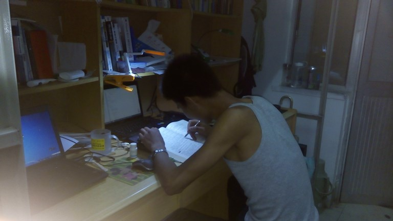
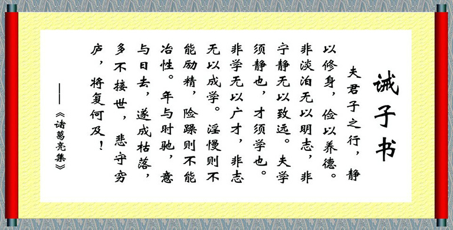

-
冥冥之中找到一个同频的知己到底有多难呢？
上午还在朦朦睡意中的听到了窗外的晴天霹雳，一切来的都太快，顿时睡意全无，抱起了《jQuery实战》书籍开始复习。为什么有些教科书我听不进去呢？看来自己还是无法磨尽高中的“自学”习惯，图书馆就是自己的另一种人生，我在这里看到我想看到的人与事物 . . . . . .仿佛我喜欢的都在这里，那么文章就从这里开始吧！

题归正转，念大学就像泡书馆，就像你泡妞一样，互相虐的死去活来，悲欢离合基本都在这里；我很喜欢挑战自己喜欢的领域：IT,传媒,设计,产品,市场,运营...尽管这些外人看起来不是那么精通，还好现在还有时间不断的翻阅书籍学习，不必考虑"太多"的经济压力，感觉自己还是幸福的;那么和你一起奋斗的朋友呢？身边有像你一样的同事朋友这么生活？说实话见到的真不多，肯定有更优秀的也许自己水平太low缘分太浅遇到的太少吧！很多人都有自己的一套习惯和生活模式，不过习惯和心智在毕业后几年内都很难改变吧！因为习惯就是一种习惯，和优秀一样，优秀一直是一种习惯，伴随一生，受益终生！
敬仰“全才”字眼的那些人物，冯唐，柳青，方励，罗永浩 . . . . . .因为他们都是苦过来的，受一定罪之后再收获人生的名誉财富那无疑是最美好的归宿。不要仅仅只是想想说说，其实除了3分钟的肾上腺素基本没多大意思；放在心里制定计划落实才行，即使你看不到今天比昨天进步多少，再过几天你可以回头看看自信就多了许多,好多过来人走的经验不一定适合现有不同家境与经历的你我，可以借鉴结合为其所用也不错。
其实一生遇到一个同频知己无论是红颜还是哥们都是非常幸运的，在乎你，懂你，即便今天我们分别之后，去不同城市经历不同的人生，续写不同的故事，那么他日再相遇依旧还是那么熟悉！如果你忍受不了孤独带来的快乐与财富，可以提前牵起一个人的手，祝福你，当然也希望你此刻已经准备好了，给对方一个最好的我！我想自己还没有准备好，不太擅长经营一段感情，久久望着却不敢牵起你的手，好像彼此已经有了一个美好的约定。你懂我也懂，懂我们的人都懂。这种感觉在工作时念书时根本无暇顾及，多数是在听电台时有种感情想法,毕竟只是短暂的，很少很少，其他时间段都有不同的计划，而我很喜欢现在的状态，忙里偷闲默默的关注着你已经足够了。
说实话，你真的很漂亮，很美，恰如我坐在电脑桌前看着窗外的阳光 . . . . . .
-
想想自己上大学那会其实挺文艺也挺逗比的！
好久没怎么正儿八经排版写文章了，也许每天走在路上脑子里想的东西够写本书了吧！只是也许，笔者闲着时就喜欢乱画乱写！记得上大学那会，老喜欢提着电脑包走在去图书馆的路上，所以我的生活基本不是走着就是坐着，感觉有点小忙，不过挺有意思的，睡着的动作每天也就维持在5个小时就足够了。我逼着自己早上起早去宿舍旁边大操场跑步。没想到的是在我没毕业之前宿舍边大操场居然修好了，刚上大学那会想着有个非常高大上的图书馆可以弥补这个学校没有体育场的缺陷了，还好母校设施不断完善！
宿舍共8人，可能我的天赋没周围同学高，比较笨，什么游戏也不会打。每天基本上是早出晚归，周末早上可以睡个懒觉感觉真的好爽！只要不出去谈东西出差等一般就待在工作室图书馆翻各种资料，敲代码，做设计，写文章...说实在的虽然每天看着忙的学的够狠的结果学术成绩却不怎么好！也许这是我上大学唯一能说出来的遗憾：没有太用心读教科书，想想泡在图书馆看喜欢的的书也算将功补过吧！不过扪心自问做的不能说是自己最喜欢的也不一定是最适合的，我想是为了生存和未来几年的梦想吧！个人很少求人依赖他人，也不想当公众人物，也没有你那么高大上的梦想，一定要拿多少投资，开多少公司，挣多少钱 . . . . . .小小的梦想，小小的念头，我只想挣点小钱安定好父母后多出去走走看看，写点作品创作点小玩意留在网络里面，这辈子就这样，我已暗自幸福满足！我承认自己是个半虚伪的人，不过活着确实需要这样的理由！
爱上三分孤独，尽可能让自己一个人呆着:看书,做东西,思考,散步...不在乎他人怎么看，经常对外合作谈东西，喜欢和同频的人合群所以自恋的以为自己的人脉圈子在同龄人中还是可以的，差不多的人就只是微笑带过，你见过我我见过你，也最多这样；忙起来根本无暇顾及这些所谓看起来的表面浮华虚荣。如果合群太久无疑自己的时间比例缩小，自然也无法超越深远思考的灵魂；喜欢向才子学习，即便这样的机会少之又少，不过已足矣，喜欢你的文字，喜欢你的思考，仅此而已.
-
是难得的朋友到底是什么样呢？
记得之前在乐乎上面读到一学姐发的文章感知深久！即使现在我们的关系很好，我们的生活节奏和想法在我们和周围人看起来都有点相似，毕竟只是现在，你想过分别一段时间之后各自开始体验不同的圈子然后重逢的状态？彼此认定的知己，无论经过怎样的岁月洗礼，再次相见我们仍然是很熟悉的，这份熟悉不来自怎样相似的经历，而是你们已经在不同的生活里面变成了更好的人，更懂得自己，更懂得他人，像是打通任督二脉之后的新自我一样，我相信我们永远是同一种人！成长即是默契。不需要占有和黏腻，好的感情，只会发生在几个努力和独立的灵魂上面。
对于文字，没有什么作品比它更有意义，她的感觉远比一见钟情来的彻底，印的深刻。正如世界很大，我喜欢的领域你也喜欢，顷刻之间，我已暗自幸福，埋在心田。
-
读了诸葛亮《诫子书》，知道什么叫做智者，什么叫做言简意赅！
诸葛亮写给儿子的一封信，只用了短短八十六字，但是对于为学做人有精简而且具体的忠告。一千八百多年前的智慧，在今天的科技时代，原来仍然有其参考价值。年轻时听人说：“真正的智慧，可以超越时空，历久常新。”初时不知所以，现在觉得所言甚是。让我们一起向诸葛亮老师学习十堂课，在变局中安身立命，在逆境中找到力量：

夫君子之行，静以修身，俭以养德；非澹泊无以明志，非宁静无以致远。夫学须静也，才须学也；非学无以广才，非志无以成学。怠慢则不能励精，险躁则不能冶性。年与时驰，意与岁去，遂成枯落，多不接世。悲守穷庐，将复何及！
第一课：宁静的力量
静以修身、非宁静无以致远、学须静也。诸葛亮忠告孩子宁静才能够修养身心，静思反省。不能够静下来，则不可以有效的计划未来，而且学习的首要条件，就是有宁静的环境。现代人大多数终日忙碌，你是否应在忙乱中静下来，反思人生方向？第二课：节俭的力量
俭以养德。诸葛亮忠告孩子要节俭，以培养自己的德行。审慎理财，量入为出，不但可以摆脱负债的困扰，更可以过着纪律的简朴生活，不会成为物质的奴隶。在鼓励消费的文明社会，你有否想过节俭的好处呢？第三课：计划的力量
非澹泊无以明志、非宁静无以致远。诸葛亮忠告孩子要计划人生，不要事事讲求名利，才能够了解自己的志向，要静下来，才能够细心计划将来。面对未来，你有理想吗？你有使命感吗？你有自己的价值观吗？第四课：学习的力量
夫学须静也、才须学也。诸葛亮忠告孩子宁静的环境对学习大有帮助，当然配合专注的平静心境，就更加事半功倍。诸葛亮不是天才论的信徒，他相信才能是学习的结果。你有否全心全力的学习？你是否相信努力才有成就？
第五课：增值的力量
非学无以广才、非志无以成学。诸葛亮忠告孩子要增值先要立志，不愿意努力学习，就不能够增加自己的才干。但学习的过程中，决心和毅力非常重要，因为缺乏了意志力，就会半途而废。你有否想过，一鼓作气人多，坚持到底人少的道理？第六课：速度的力量
怠慢则不能励精。诸葛亮忠告孩子凡事拖延就不能够快速的掌握要点。电脑时代是速度的时代，样样事情讲求效率，想不到一千八百多年前的智慧，也一样不谋而合。快人一步，不但理想达到，你有否想过，有更多时间去修正及改善？第七课：性格的力量
险躁则不能冶性。诸葛亮忠告孩子太过急躁就不能够陶冶性情。心理学家说：思想影响行为，行为影响习惯，习惯影响性格，性格影响命运。诸葛亮明白生命中要作出种种平衡，要“励精”，也要“冶性”。你要提升自己性格的品质吗？第八课：时间的力量
年与时驰、意与岁去。诸葛亮忠告孩子时光飞逝，意志力又会随着时间消磨，“少壮不努力，老大徒伤悲”，时间管理是个现代人的观念，细心想一想，时间不可以被管理，每天二十四小时，不多也不少，惟有管理自己，善用每分每秒。请你想一想，你有蹉跎岁月吗？第九课：想像的力量
遂成枯落、多不接世、悲守穷庐、将复何及。诸葛亮忠告孩子时光飞逝，当自己变得和世界脱节，才悲叹蹉跎岁月，也于事无补。要懂得居安思危，才能够临危不乱。想像力比知识更有力量。你有没有从大处着想，小处着手，脚踏实地，规划是人生呢？第十课：精简的力量以上诸葛亮写给儿子的一封信，只用了短短八十六字，精简地传递了具体的讯息。我相信精简的表达源于清晰的思想，精简沟通更有效果。你懂得言之有物地精简沟通吗？自幼老爸就一直给我讲过许多道理至今仍是记忆犹新 ，我很感激他这位启蒙老师，开阔了我的眼界，工作之后我和父母的联系慢慢减少了，但我走在马路上经常会听那些经典老歌《父亲》《回家看爸妈》虽深处城市却身不由己，用歌声来祈祷，给自己加油，想起他们，也就给我带来了无穷的动力；儿子也只能尽可能多回家看看父母，经常在心里念叨，寄福上天保佑受苦大半辈子的他们！
-
创业大潮把你带走了？面对生存，是创业呢还是先工作呢？
Mark Weiner 是 Centrify 公司的首席营销官，他具有超过20年的管理经验，并在多家创业公司中担任过高级副总裁。在本文中他根据自己的从业经验，建议刚刚走出校门的年轻人先就业再创业，因为职场不仅能够为你带去创业导师和未来的创业团队，还能让你更好地理解客户、理解自身。
在今天，很多年轻的创业者都想要直接跳过给别人打工的阶段，直接进阶为自己当老板。他们心中的英雄如马克•扎克伯格、乔布斯、谢尔盖•布林等人都是这么干的。榜样的力量是无穷的，因此这些年轻人也幻想着无需经历任何职场的训练就直接投身到改造世界的创业工作中。不过残酷的现实是 99.99% 的年轻创业者其实和上述创业英雄们并不在一个起跑线上。对于这些还没有准备好的年轻人来说，更好的选择是暂缓自己创业的梦想，踏踏实实地去硅谷的某家公司找份工作，从实践中积累一些宝贵的经验。
回顾我自己的职业生涯，我在7个不同的创业公司中担任过领导职位，其中6个公司都有了很好的结果。对于新一代的年轻创业者们，我想给出一些实际的忠告： 不要急着就投入到创业的大潮中。你的第一步应该是加入一间位于硅谷的快速成长创业公司。在公司里你可以建立自己的人脉、锻炼自己的领导能力，最重要的是切实地去学习创业公司是如何运转的。当然了，你的终极目标是自己开创一番事业，不过在那之前你可以花些时间规划一下自己如何能达到目的。
比方说你是一名工程师，那你就可以利用这段时间来获得一些商业运作的经验，特别是要多关注由你所负责损益的产品，从中积累打造产品的经验。在一个自负盈利的产品项目中，你的角色就好比是这个产品线的迷你 CEO。你在其中的职责既包括了完成收入目标，也包括了赶在期限前发布产品，这些工作非常类似于你自己运营着一家小公司时所需完成的工作。当然了，想要在一个创业公司中坐到这个位置并且从中获得管理项目的经验，你还必须放聪明点。你需要在公司里建立良好的人际关系，并且敢于指出问题并提出建议。在公司开会时，你应该积极地分享自己关于产品的看法，这才能让别人知道你对产品管理有着强烈的兴趣。你甚至可以如影随形地跟在一个项目经理后面，不停地表现出自己的聪明才智，证明你是产品团队的绝佳人选。
找到一位职场导师。这件事非常重要，一位职场导师不仅能帮助你在公司内部得到成长，如果你确实是可造之材，他还能够指引你如何更快地走上管理岗位，在管理岗位上你可以获得有助于未来创业的宝贵经验。职场导师会审视你的能力图谱，让你认识到还需掌握那些对于之后的成功至关重要的技能。而导师自身的人脉关系也是你可以利用的宝贵资源。
那么我们要如何找到一位职场导师呢？首先，你应该在公司里寻找到一位和自己有某些相似之处的资深人士。也许你们是校友，可能你们都热爱攀岩，不论是哪方面相似之处都可以为你所用，找出这些相似点并依靠其建立关系。没什么不好意思的，不要总认为自己问得太多。这种师徒关系通常都是双赢的，对于你而言是获得了有价值的指导，并且你的职场导师也可能会成为你在创业初期的投资人；对于你的职场导师来说，如果你最终创业成功，他也会从中获得可观的回报。
在创业之前先理解用户的需求。在一家硅谷中的公司工作能为你提供非常关键的知识——明白用户想要什么以及不想要什么。首先，你可以利用工作机会尽可能地去接近顾客，看看他们是如何与产品互动。要重视用户对于产品的反馈，想方设法参加每一次用户意见咨询会，去听听用户的第一手反馈。在出席这些会议的时候要从中学习用户想要获得哪些新的产品功能与改进，以及他们为什么有这种要求。
对于有志创业的人来说，理解用户需求是非常重要的知识积累。因为在硅谷时至今日仍然有很多创业者是为了创新而创新，他们在设计产品前根本不做必需的市场研究，也不去验证自己的产品在市场中是否存在真实需求。你可以利用自己的工作与用户充分交流，这样你就获得了走入他们内心的机会，并且从 中发掘出可以用于自己未来创业的契机。通过在公司工作的时间，你在实际创业之前就已经做完了相关用户调研，那你的公司当然比其他公司更有可能获得成功。
为你的创业团队寻找人才。想要在创业时全凭自己的力量来寻找到合适的人才是非常困难的一件事，近乎于不可能完成的任务。创业之前先进入一家科技公司工作，有助于你在自立门户之前集结起一支所需的队伍。就算是马克•扎克伯格在成立 Facebook 的初期也找了雪莉•桑德伯格来辅佐自己。
在一间公司里工作能让你有机会遇到形形色色的人。你可以通过在工作中的接触了解到他们的工作能力与业绩表现。你会了解自己所擅长的方面，同时也观察别人擅长那些技能，并从中找出可以与你形成互补的对象。如果你是个一根筋的程序员，那么可能你并不适合与客户打交道，这也就意味着你必须找到一个负责商务的合伙人。而先在一家公司工作就是你在创业之前为自己招兵买马的最好机会。
明确自己是适合做技术专家还是公司创始人。当然了，你可能两样都适合。不过在我过去的经验中，有不少人是单纯地醉心于技术之中，而另一些人却充满了建立公司的雄心壮志。如果你仅仅是喜欢专研产品细节，比如研究产品是否符合市场需要或者是销售人员能不能卖得动它之类的，那么相比成立自己的创业公司，你可能更适合于在公司中工作。但是如果你的兴趣点在于找出人们真正所需，明白要如何达到成本效益地进行开发与如何建立销售渠道，那么去创业是你正确的选择。
硅谷的创业者变得越来越年轻，从学校退学直接去创业的青少年CEO的确不少，但是还有更多的成功创业者是在创业之前花了一段时间从工作中学习积累。在我看来，拥有工作经验的创业者能够更好地理解自身、洞察市场，而这就是取得成功的关键所在。(来自TECH2IPO创见文章)
老大哥分析的很全面，不过每个人都应该根据自身情况结合当下时势环境去创造自己想要的一类生活。有些创业者曾说过：“不创业的人是没有完整的人生的”，我想这话是说给有些人听的，因为他已经扎进创业这股大潭中而且乐死不疲不管结果如何还是祝福他们吧！以前也老想创业，不过现在更成熟的看待这种心态了，不断积累知识与技能，扩宽资源链和人脉圈子待时机成熟之时便自然会做出最佳的选择，心想会不会太自信玩漏了啊！他人的声音都是客观的因素，你要听听自己内心的声音，真正想要什么生活和想成为什么样的人，一切都通了然后你也就知道怎么做了 . . . . . .
-
备注声明
工作原因，文章板块均移步到微信公众平台的原创媒体，感兴趣者可以添加微信号：PhotoArtLife(或识别右侧二维码添加编辑WeChat)
二维码
微博私信
回到顶部